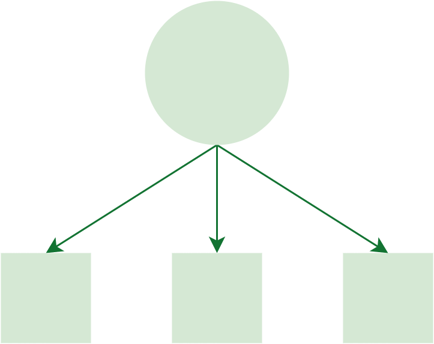
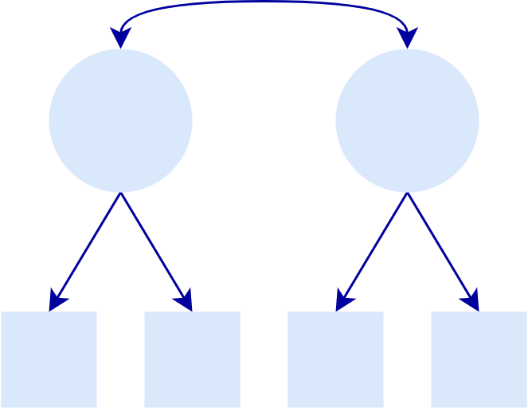

Dynamic Model Fit

The applications on this website compute dynamic fit index (DFI) cutoffs for latent variable models that are tailored to your specific model. These cutoffs can be used as one piece of evidence of validity to help gauge if the misspecifications in your model are trivial or substantial.

One-factor CFA
To compute DFI cutoffs for one-factor confirmatory factor analysis models, you need your standardized factor loadings and sample size.

Multi-Factor CFA
To compute DFI cutoffs for multi-factor confirmatory factor analysis models, you need your standardized factor loadings and sample size.

TBD
Not available yet
An accompanying R package is under development